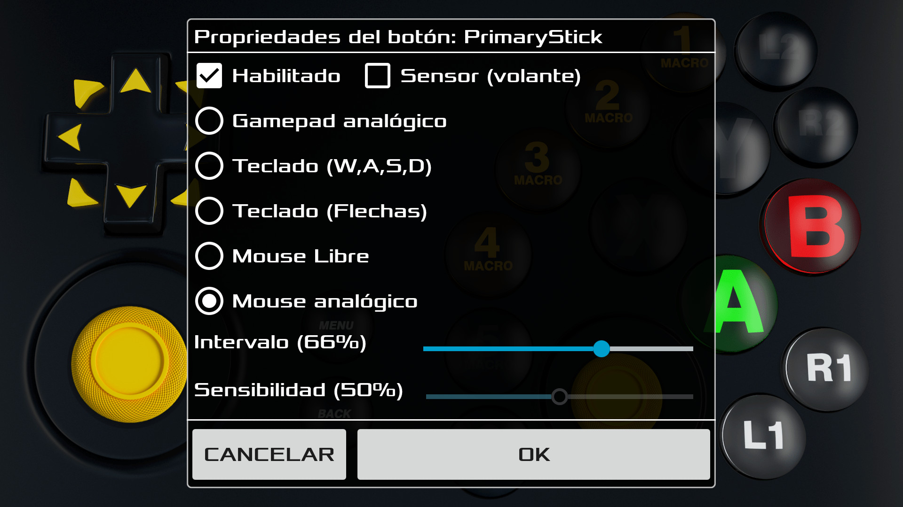
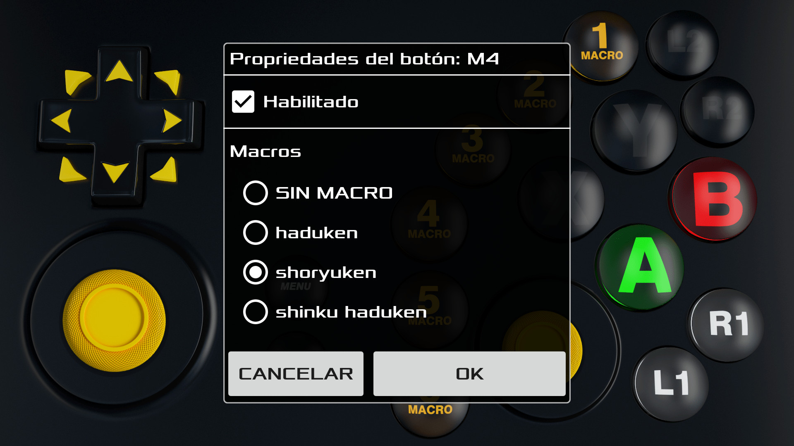
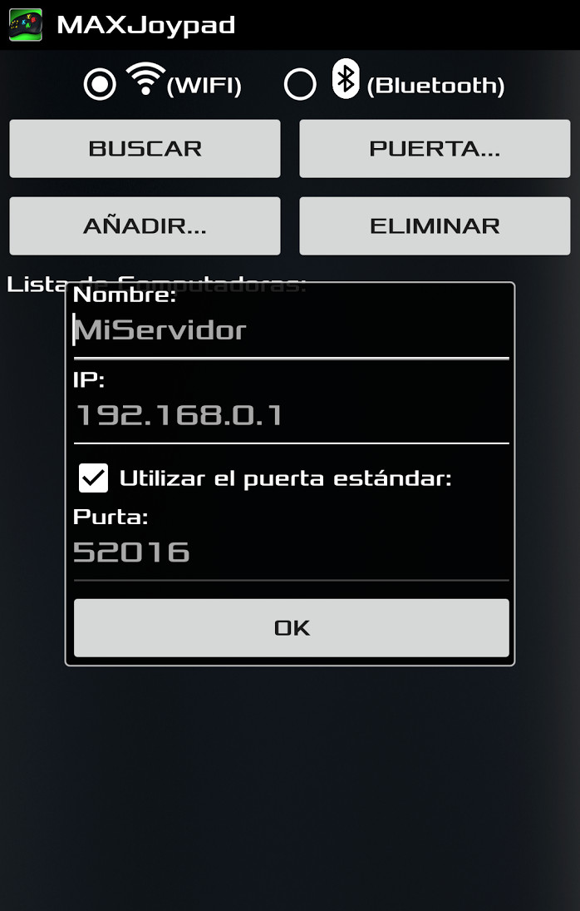

Lo MAXJoypad App sustituí el controlador de juegos y permite jugar los juegos de computadora utilizando todo el poder de su Smartphone o del Tablet Android.
Demostración
Características
- El software de servidor y el driver son optimizados para conseguir el mejor rendimiento de comunicacíon entre lo App y el PC, con emulación real del controlador de juego.
- El driver de MAXJoypad permite que lo App se reconozca como el controlador de juego en el Windows.
- Diseño/Skin 3D con estética y posicionamiento de botones como en el controlador de juego real.
- Soporte para las comunicaciones Wifi y Bluetooth.
- Soporte para multijugador hasta 4 jugadores (multiplayer).
- Permite la configuración de parámetros de la red como el IP y puertas aunque lo App realice la búsqueda y la configuración automática estos parámetros en modo Wifi.
- El recurso de grabación de acciones deja lo App fácil y sin complicaciones para jugadores principiantes y profesionales. Es posible grabar acciones de juego o movimientos especias y asociarlos a seis botones disponibles.
- Administración de perfiles que permite a los jugadores crear diferentes configuraciones de Gamepad para diferentes juegos y modos de juego. Es posible desactivar los botones non deseados o configurar su comportamiento como en el modo “Mantenga Pressionado”/"Press and Hold".
- Soporte para la emulación del controlador de Xbox 360 en juegos de PC a través de x360ce.
- No és requerido privilegio de administración para ejecutar el software de servidor en el Windows.
- Paquetes de instalación y driver com la firma digital para su seguridad.
- Rápido proceso de instalación del software de servidor y del driver.

Interfaz gráfica con botones 3D que imitan un controlador real.

Críe perfiles de control como en este ejemplo Jump and Run.

Automatice las acciones especiales (Macros).

Configure los botones de MACRO, según sea necesario.

Conectar lo App MAXjoypad a través de Wifi o Bluetooth.
Descargar
Descargar: MAXJoypadServerPack-1.2.5.exe
(Para los Windows 7, 8, 8.1 y 10 - 32/64 bits)
La instalación de el MAXJoypad en el Windows es rápida. Sólo tiene que descargar el paquete de arriba y ejecutarlo. Durante la instalación del MAXJoypad en el Windows el firewall es configurado automáticamente para permitir la conexión entre Windows y la aplicación. Caso usted no encuentra la interfaz del software servidor en el Windows, verifique el icono de MAXJoypad en el systray. Haga um clic en el botón derecho del ratón y seleccione la opción "Settings..." para mostrar la interfaz de configuración de MAXJoypad en el Windows.
Si Windows está bloqueando la descarga probar lo siguiente archivo:
Archivo ZIP: MAXJoypadServerPack-1.2.5.zip.

Vídeos/Tutoriales
Instalación del MAXJoypad en el Windows.
Contacto/Soporte
- Haga una copia de los archivos x360ce.ini y xinput1_3.dll del directorio C:\Program Files(x86)\MaxJoypad\MaxJoypad\x360\
para el directorio de instalación del juego y lo reinicie.
Para juegos instalados de la Steam en general están en el directorio es: C:\SteamLibrary\steamapps\common\(JUEGO)\ o verifique en la configuración del software de la Steam cuál es el directorio de instalación de juegos para su computadora. - Verifique si su teléfono o tableta y la computadora están conectados a la misma red Wi-Fi.
- Cierre el software de servidor MAXJoypad en el Windows y ejecute de nuevo y verifique se el estado del servidor aparece como "Running...” en el Gamepad Service Status de la interfaz de configuración ubicada en el systray en el Windows.
- Verifique se la configuración de la conexión es la misma en el software de servidor y de la aplicación (Configuración de la conexión). Verifique el tipo de conexión Wifi o Bluetooth y las puertas.
- Si su Windows 7 esta con la actualización automática está desactivada o no está actualizada, es necesario instalar al menos una actualización del driver de MAXJoypad para que lo mismo sea cargado correctamente. Asegúrese de que su sistema es de 32 o 64 bits y descargue la actualización directamente desde el sitio web de Microsoft. .
- Verifique si el driver de MAXJoypad está funcionando correctamente, utilizando el botón "Check Gamepad Driver..." de la interfaz de configuración de MAXJoypad en el Windows. Si es apresentada una mensaje de error sobre el driver, desinstale el paquede de MAXJoypad utilizando la opción Desinstación de Software en el Windows e instale de nuevo.
- Si su Windows 8.1 o 10 está com el Windows Defender activado y cuándo es descargado el paquete de MAXJoypad el navegador informar que el archivo puede dañar su equipo, usted deve ignorar esta mensaje. El MAXJoypad tiene el paquete de instalación y driver firmados digitalmente para su seguridad.
- Si su Windows 8.1 o 10 está com el Windows Defender activado, actualice las definiciones de virus, y spyware. Para hacer esto, abra la pestaña Actualizaciones de Windows Defender y pulse el botón Actualizar y vuelva a instalar el paquete MAXJoypad.
- El MAXJoypad se puso a prueba con la soluciones antivirus gratuitas más utilizadas. Esto puede no ser el caso si su equipo tiene una configuración de firewall o de antivirus específica. En este caso, póngase en contacto con su proveedor de antivirus y con el equipo de soporto de MAXJoypad.
1 - Configuración de MAXJoypad para el modo controlador de Xbox 360
2 - Los problemas de conexión entre lo App y el servidor de MAXJoypad
3 - Mensaje de error sobre el Gamepad Driver
4 - Los problemas relacionados con antivirus y con el Windows Defender